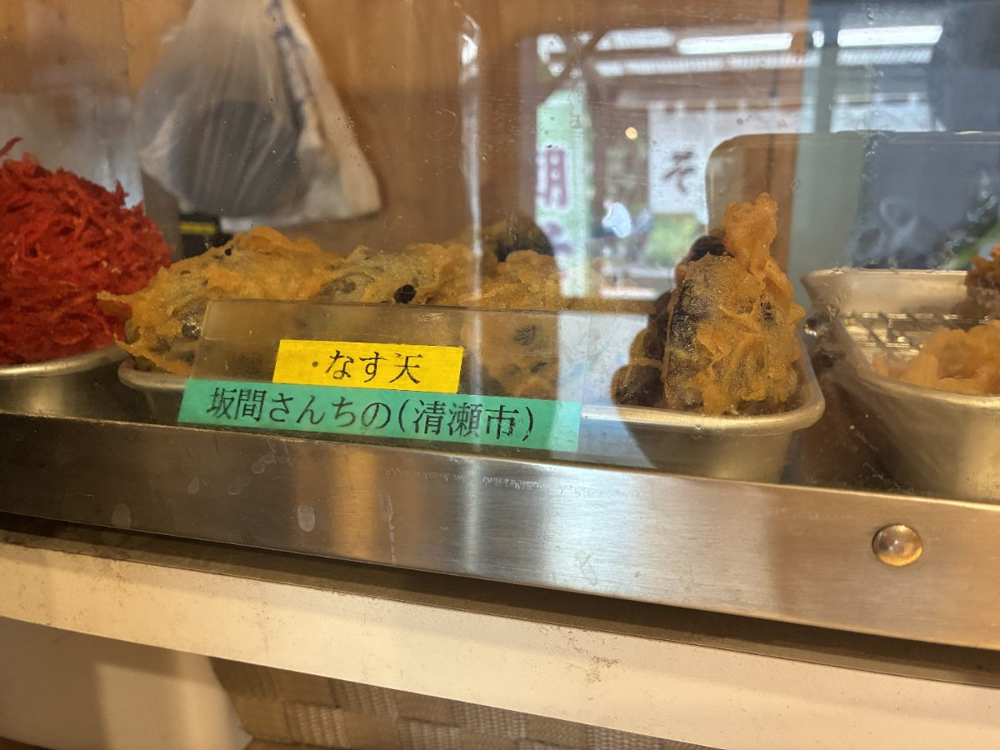
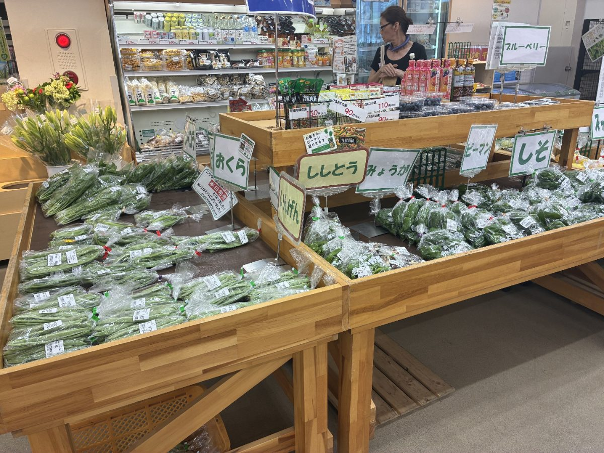
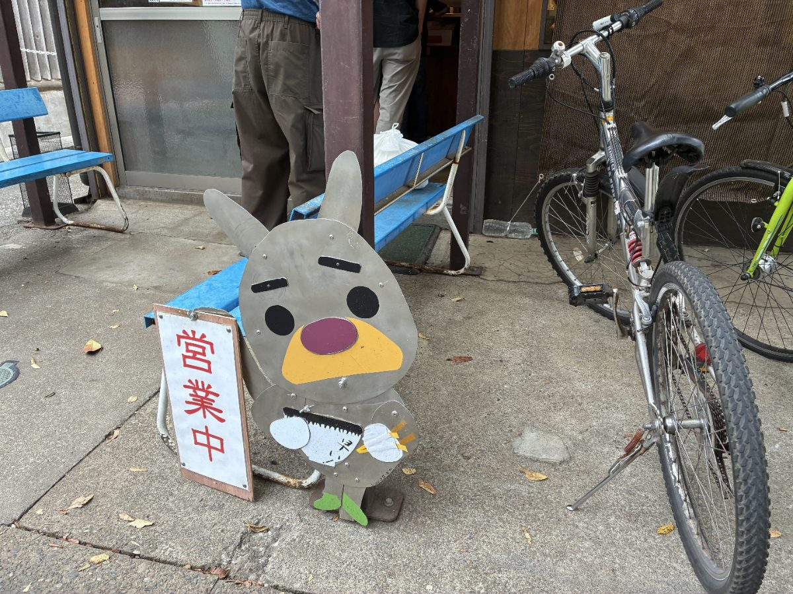

What to Do in West Tokyo on a Rainy Day: A Farm Market, a Standing Soba Counter and a Hot Bath

One weekend in September it rained from the morning. I had planned to plant potatoes on my own small plot in Kiyose, and the rain cancelled that. You cannot argue with the weather, so I gave up on the farm and went looking for something else to do nearby.
What I found that day turned out to be better than what I had planned. That happens a lot on rainy days, and it is why I no longer think of rain as a lost day in west Tokyo. The big sights downtown get crowded with everyone who had the same idea. Out here, the good places are small, close together and mostly indoors.
This is the rainy-day plan I would give a friend: a farmers' market in the morning, a standing soba counter for lunch, and a hot bath in the afternoon. All three are in Kiyose and the next town, Higashikurume, about 30 minutes from Ikebukuro on the Seibu Ikebukuro Line.
Morning: a farmers' market that feels like a neighbourhood shop
My first stop that day was Mirai Kiyose Shinsenkan, the farmers' market run by the local agricultural cooperative (JA). Kiyose farmers bring in what they picked that morning, and each bag carries the grower's name.

On that rainy morning the tables held okra, shishito peppers, myoga, shiso and blueberries, under handwritten signs. It was raining, but the vegetables were still picked that morning. What you see changes with the season, so there is no fixed list to promise. Even if you are staying in a hotel and cannot cook, it is a good place to see what people here actually eat, and to buy fruit or a snack for later.
- Hours: 9:00 to 16:00.
- Closed: Sundays, national holidays and the New Year period. Plan this for a weekday or a Saturday.
- Getting there: Seibu bus from the north exit of Kiyose Station (bound for Asahigaoka Danchi) to Miyanodai-jutaku, about 6 minutes, then a 1-minute walk.
Lunch: why eggplant tempura made my day
A few minutes' walk from the market, on Keyaki-dori, is Marusu Soba Udon, a tachigui (standing) noodle counter. From outside it looks like a prefab hut, with a hand-made sign and a metal mascot by the door.

I went in and ordered soba with eggplant tempura. In the glass case of tempura was a small handwritten label: "eggplant tempura, from the Sakama family's farm (Kiyose)". The Sakama family are probably farmers in the neighbourhood, and the eggplant was cut thick and fried. It was crisp outside, soft and thick inside, and very good.
I had only gone there because the rain had ruined my plans, and it was the best part of the day. The label is what stayed with me. In central Tokyo you rarely know where your food was grown. Here the farm was a short walk away, and the shop wrote the family's name on the case.
A few tips for a standing counter if you have not used one: order, eat and leave without lingering; there is no English menu, so pointing at the tempura case works fine; and bring cash just in case. The shop is closed on Sundays, and I have not found official opening hours online, so go around lunchtime on a weekday or Saturday.
Afternoon: a bath is the best rainy-day activity in Japan
If it is still raining after lunch, go and get warm. Spa Japon (Spadium Japon) in Higashikurume is one train stop from Kiyose, and it is one of the largest bath complexes in the Tokyo area. There are indoor baths, including a carbonated bath, and an open-air area with several outdoor baths. Sitting in hot water outside while cold rain falls on your head is one of the small pleasures of a Japanese winter, and it is something you can only do on a bad-weather day.
- Getting there: from Higashi-Kurume Station (Seibu Ikebukuro Line), a short bus ride or a walk of roughly 15 to 25 minutes. In the rain, take the bus or the facility's free shuttle; check the shuttle times on the official site.
- Hours: it opens in the morning and stays open late into the night, every day. Check the official site for exact hours, prices and any maintenance closures.
- First time? The rules are simple (wash first, no swimsuits, towel out of the water), but they feel strange the first time. I wrote them out step by step in Tokyo bathhouse etiquette for first-timers. Tattoo rules differ by facility, so check before you go.
What about temples and gardens in the rain?
A wet forest can be beautiful, and moss looks its best in light rain. But be careful with outdoor sights on a stormy day. Heirinji, the Zen temple forest in Niiza that I visit often, may close its gate in bad weather. If the rain is light and you want to try, check the temple's official site on the morning, and keep the bath as your back-up plan.
A simple rainy-day route
- About 9:30: Ikebukuro to Kiyose on the Seibu Ikebukuro Line (about 30 minutes).
- 10:00 to 11:00: bus to Mirai Kiyose Shinsenkan and look around the market.
- 11:30: lunch at Marusu Soba Udon, a few minutes' walk away.
- Afternoon: back to Kiyose Station, one stop to Higashi-Kurume, and a bus to Spa Japon. Plan at least two hours there.
Do it on a weekday or a Saturday: both the market and the soba counter are closed on Sundays. Bring a folding umbrella rather than a long one (it is easier on a bus and at a standing counter), a small towel and some cash.
The short version
On a rainy day, skip the crowded downtown sights. Spend the morning at a farmers' market, have standing soba with tempura made from a neighbour's vegetables, and finish in a hot bath while the rain falls. The day I lost my farm work to the rain, this is what I found, and it was a better day than the one I had planned.
I guide a morning in Kiyose in small groups of up to 4 guests: a real farm plot, this market and the soba counter, with an option to add Spa Japon afterwards. What we harvest depends on the week, so I cannot promise it. Dates on GetYourGuide.
More stories from these walks are in my ebook, Hidden Tokyo: A Local Guide's Notebook ($4.99).
Some links on this page are affiliate links: booking through them supports this site at no extra cost to you.